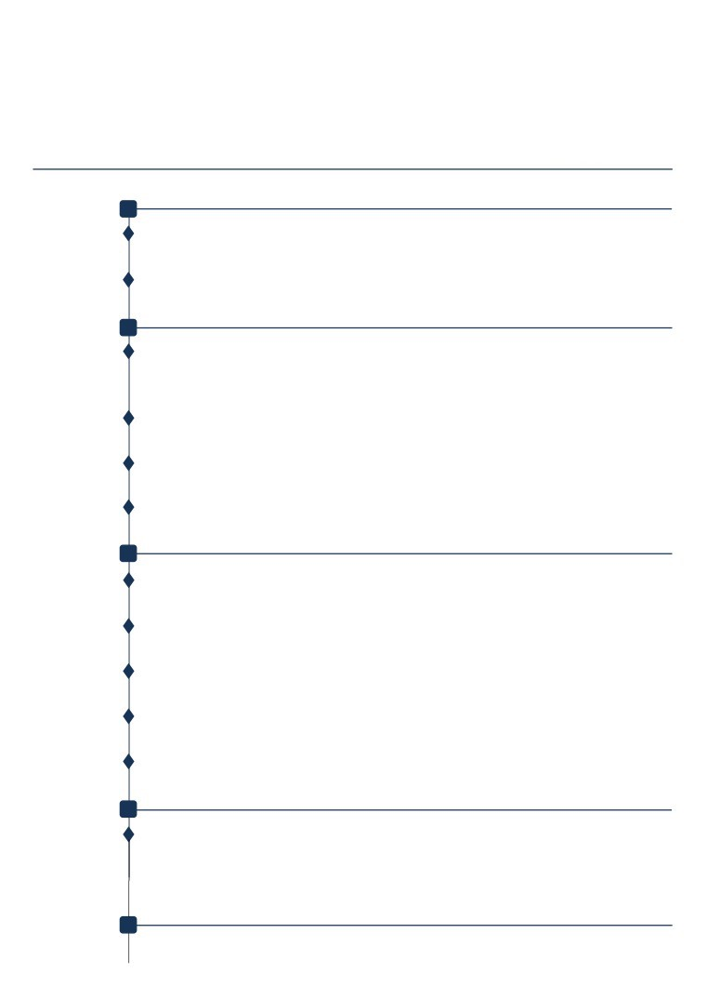

孙毅聪
电话：13671813994
邮箱：sunyicong123@126.com
sunyicong.olivia@gmail.com
教育背景
2018.9-2020.7
天津师范大学
应用心理
硕士（GPA:3.85/4）
主修课程：高级心理统计学、现代心理测量、心理学研究方法与技术、心理学前沿进展等
2010.9-2014.7
吉林大学
市场֫营销
本科（GPA:3.2/4）
主修课程：消费行为学、市֫营销、组织行为学、战略管理、品牌管理、数量经济学等
论文
2019
Tour Liu, Yicong Sun, Zhen Li, Tao Xin. (2019). The Impact of Aberrant Response on
Reliability and Validity. Measurement: Interdisciplinary Research and Perspectives, 17(3),
133-142. DOI: 10.1080/15366367.2019.1584848
2019
孙毅聪, 李珍, 刘拓*.（2019）神经质对无手机恐惧的影响：独处和҉恋ङ链式中介作用. 中国社
会心理学会 2019 年学术年会. 口头报告
2019
翁雪玲, 孙毅聪, 刘拓*. (2019)初中生内隐与外显教育价值观的研究. 中国心理学会发展心理专
业委员会第十五届学术年会摘要集
2019
李珍, 孙毅聪, 刘拓*. (2019). 地区差异对青少年在线分级阅读的影响及其差异研究：基于项目反
应理论. 中国心理学会发展心理专业委员会第十五届学术年会摘要集
项目
2017-2018
联合国儿童基金会 2018-2020 周期爱生学校西部五县学业评估（联合国儿童基金会）
负责量表的施测，数据采集和分类
2018-2019
项目反应理论框架下的多项选择题设计天津师范大学博士基金）
负责区分各题目的参数矩阵
2018-2021
多项选择题的最优设计:基于测量与眼动双重考量(教育部人文社科青年基金)
负责 IRT 框架下选择题考察难度和区分度分析
2019-2021
心理测验中不同类型异常反应模式的识别与结果校正(国家自然科学基金青年基金)
负责分析 IRT 框架下各指标的反应趋势
2018-2019
强制隔离戒毒人员解除强戒回归社会前抗复吸力的评估测验及使用手册的编制(天津市戒毒局)
负责父母养育量表题目的编写修订及施测
工作经历
2014.7-2018.8
中国指数研究院（上海分院）
营销主管
带领 5 人团队，为百强开发商(绿地、万科、碧桂园等)提供品牌服务和城市投资进入前咨询服 务;为金融机构 (汇丰银行、渣打银行、平安不动产、野村证券等)提供房地产数据分析服务， 年创造 550 万项目签约量。
技能
R 语言、Mplus、SPSS 良好的数据分析水平、英文阅读与写作水平